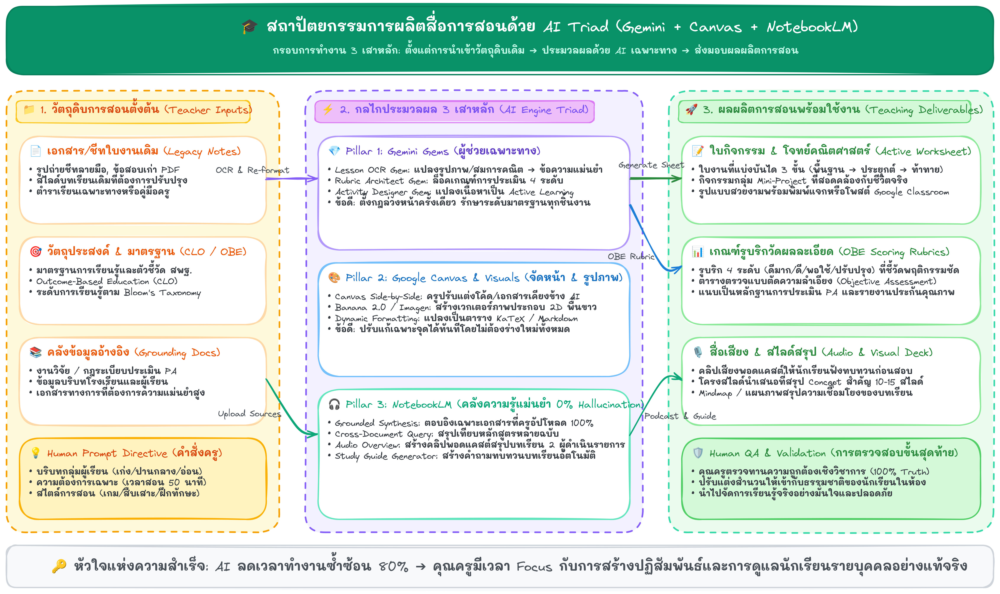

การประยุกต์ใช้ AI เพื่อการจัดการเรียนการสอน
โครงการอบรมเชิงปฏิบัติการพัฒนาครูและบุคลากรทางการศึกษา — เน้น "ลงมือทำจริง ไม่นั่งดู AI โชว์" ทุกคนออกจากห้องพร้อมชิ้นงานสื่อการสอน/ใบงาน 1 ชิ้น ด้วยเครื่องมือฟรี 100%
3 เสาหลัก AI สำหรับครูไทย
Input & Context Engineering
ใช้กรอบคิด 6-Part Context Framework (บริบท → เป้าหมาย → ข้อมูลตั้งต้น → เกณฑ์ → รูปแบบผลลัพธ์ → การตรวจทาน) สั่งงาน AI เสมือนผู้ช่วยสอน ยิ่งให้ข้อมูลชัด ผลงานยิ่งตรงหลักสูตร
Tool Triad (ฟรี 100%)
Gemini (OCR/เนื้อหา/ภาพ 2D) + NotebookLM (สรุปเอกสารจริง/พอดแคสต์) → ประกอบร่างใน Canva
Verification Ladder
ตรวจ 3 ขั้น: 1. ตรวจระเบียบกฎหมาย 2. ตรวจสูตรคำนวณ 3. คุ้มครองข้อมูลเด็ก (PDPA) — ครูเป็นผู้ลงนามรับผิดชอบเสมอ
แผนผังโครงสร้าง & สถาปัตยกรรม AI
เลือกคลิกดูแผนผังแนวคิดแต่ละหัวข้อเพื่อขยายดูรายละเอียดอย่างคมชัด

📌 แผนภาพสถาปัตยกรรม 3 เสาหลัก: ตั้งแต่วัตถุดิบครู (Legacy Notes/CLO) ➔ ประมวลผลผ่าน AI Triad ➔ สู่ผลผลิตพร้อมใช้งานจริง
เส้นทางการเรียนรู้ตลอดวัน (4 Sessions)
คลิกที่ปุ่มกิจกรรมของแต่ละช่วงเวลาเพื่อเปิดคู่มือหรือใบงานฝึกปฏิบัติ
💎 Gemini Ecosystem: ปรับ Mindset + Gems OCR + Gemini Canvas
เปิดโลก Live Wow Demo 3 นาที · ฝึกถอดความจากใบงานเก่าด้วย Gems OCR แล้วส่งต่อเข้า Gemini Canvas เพื่อปรับระดับภาษาและสร้างโจทย์แบบ Active Learning
🎨 Banana 2.0 (Imagen 3) & Canva Strategy สำหรับครู
สูตรเจนภาพการศึกษา: 2D เวกเตอร์, พื้นหลังขาว #FFFFFF · คู่มือเจาะลึก Canva 49 ขั้นตอน ตั้งแต่เลือกเทมเพลต แก้สมการคณิตศาสตร์ คุมโทนสี จนถึงส่งออก PDF
📚 NotebookLM: ปราบความหลอนด้วยเอกสารจริง + สร้าง Audio Podcast
อิงเฉพาะเอกสารที่ป้อน 100% · การจัด Tier ไฟล์ (.docx, .pdf, .csv ตารางคะแนน) · กิจกรรมสร้าง Study Guide, แผนสรุป และ Deep Dive Audio Podcast (AI คุย 2 คน)
🚀 Capstone Showcase & AI Speedrun ปล่อยของชิ้นงานจริง
สปีดรันผลิตสื่อ 1 ชิ้น (สแกน → ร่าง → ทำภาพ → โพสต์) · ส่งผลงานขึ้น Showcase Gallery ชื่นชมร่วมกัน พร้อมรับวุฒิบัตร